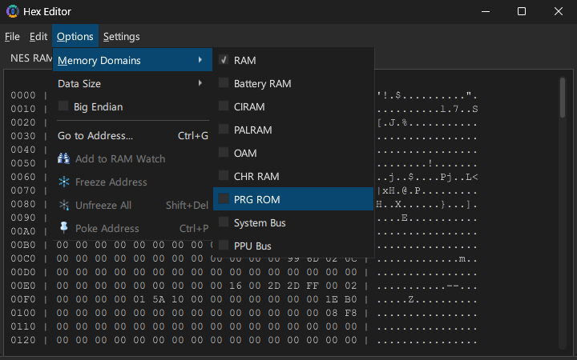
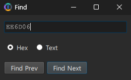
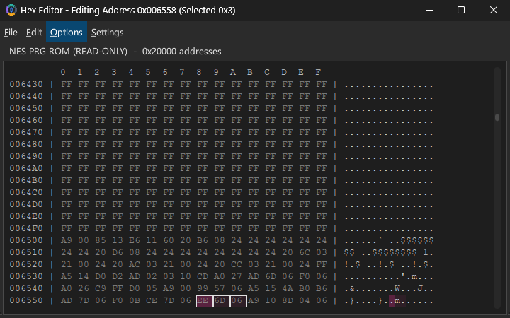
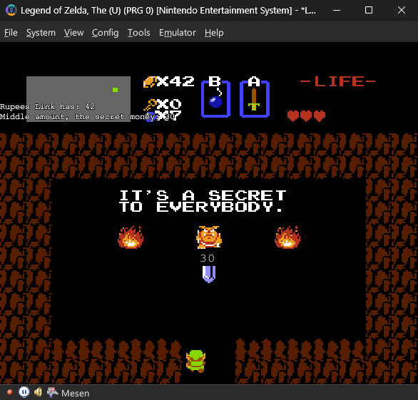

Using a Disassembly
What It Is
A game is a program. Its instructions are stored in the cartridge as machine code, plain bytes that the processor reads. A disassembler turns those bytes back into instructions a person can read, such as INC $066D (add one to the byte at address 066D). The result is called a disassembly.
RAM Search tells you where a game keeps a value. A disassembly tells you why the value changes and where it comes from. With both you can predict what the game will do before it happens, and show it with a Lua Console script.
This page follows one real example from start to end. It finds how much money a secret cave in The Legend of Zelda (NES) gives Link, before he takes it. The finished script is the example on the Lua Console page.
What It Is Used For
- Finding where a value comes from, such as a reward, a drop or a random choice.
- Finding every place a game reads or writes an address.
- Learning what each value in a table means, so a script can read it.
- Checking an address you found with RAM Search before you trust it.
What You Need
| Tool | What it is for |
|---|---|
| RAM Search | Finds the address of a value you can see, such as the rupee count. See RAM Search. |
| RAM Watch | Shows the addresses you found while the game runs, so you can see how they change. See RAM Watch. |
| Hex Editor | Shows the raw bytes of any memory domain, including PRG ROM, the game's program. Its Find (Ctrl+F) searches for bytes. See Hex Editor. |
| Lua Console | Reads memory with one typed command, and runs the finished script. See Lua Console. |
| TAStudio branches | Saved points in the movie, such as one before and one after an event, so you can compare memory. See TAStudio branches. |
| A 6502 disassembler | Turns the game's bytes into instructions. Use any 6502 disassembler you like. Commonly used ones are Ghidra (free, from the NSA, with 6502 support built in) and IDA (from Hex-Rays, with a 6502 processor module). The da65 disassembler from the free cc65 package is a small command line one. |
The NES processor is a 6502, so any disassembler that knows the 6502 works for NES games. Load the .nes file and skip its 16-byte header, or use a loader that understands the NES file format.
Words Used on This Page
| Word | Meaning |
|---|---|
| Address | A number that names one byte of memory, written in hexadecimal (base 16). $066D and 0x066D both mean the address 066D. |
| Opcode | The first byte of an instruction, which says what it does. AD is LDA (load a value), 8D is STA (store it), EE is INC (add one). |
| PRG ROM | The part of the cartridge that holds the game's program. Chimera shows it as the PRG ROM memory domain. |
| Bank | A 16 KiB piece of PRG ROM. The NES can only see 32 KiB of program at once, so Zelda switches banks in and out. Its last bank always sits at CPU address $C000, and one other bank is switched in at $8000. |
| Zero page | Addresses below $0100. Instructions use them with a single address byte, which makes them shorter and faster. |
| Little endian | A 16-bit number is stored with its low byte first and its high byte second. The 6502 works this way. |
| Work RAM | Extra RAM on the cartridge at $6000 to $7FFF. Zelda copies tables and some code there. Chimera shows it as the Battery RAM domain. |
Example, the Secret Money in The Legend of Zelda
Link has 42 rupees and stands in a secret cave. Walking over the rupee on the floor gives him 30, so he ends with 72. Two TAStudio branches were saved, one before he takes the rupee and one after. Every number below was read from the running game or from the game's code. No guide or wiki was used.
1. Find the Rupee Count with RAM Search
In RAM Search, search the RAM domain for exactly 42 on the first branch. Load the second branch and search for exactly 72. Only 066D is left. Poking it to 99 makes the status bar show 99, so it is the real rupee count.

Adding 066D to RAM Watch and walking over the rupee shows something more. The count does not jump from 42 to 72. It goes up by one every second frame. So some other code feeds it a bit at a time, and that code is the next thing to find.
2. Search the Game's Program for the Address
Every instruction that uses $066D holds the address inside it. An instruction that uses a full address is the opcode followed by the address, low byte first. So
LDA $066D is stored as AD 6D 06
INC $066D is stored as EE 6D 06
STA $067D is stored as 8D 7D 06Search the PRG ROM for the two bytes 6D 06, which is 066D with its two bytes swapped. Leaving out the opcode finds every kind of use at once, reads, writes, adds and compares. Use your disassembler's byte search, or open the Hex Editor on the PRG ROM domain and use Edit, Find (Ctrl+F).
In the Hex Editor, choose Options, Memory Domains, PRG ROM. The domain is read-only, so nothing can be changed by accident.

Choose Edit, Find (Ctrl+F), leave Hex chosen, type the bytes without spaces and press Find Next. Find looks from the highlighted address onward, and F3 finds the next match. Here the search was for EE6D06, the whole instruction INC $066D, to jump straight to the code used in step 3.


For a zero page address, such as $AD, an instruction holds only one address byte. Searching for one byte matches far too much, so include the opcode, such as 85 AD for STA $AD. The same trick finds only writes to a full address, such as 8D 50 03 for STA $0350.
Each match is a place in PRG ROM, counted from its start. To turn it into a bank and a CPU address, divide by 16384 ($4000). The whole part is the bank. The rest, added to $8000, is the CPU address (or added to $C000 for the last bank). For example the place $6558 is bank 1, address $A558. A disassembler that knows the NES does this for you.
Not every match is code. The same two bytes can be part of a table or a picture. Disassemble from a little before each match. A real match reads as sensible instructions with the match right after an opcode such as AD, 8D, EE, CE (DEC) or 6D (ADC). A false match reads as nonsense.
3. Read the Code That Adds the Rupees
The search for 6D 06 gave 10 matches. Most only read the count, to draw it on the status bar or to check if Link can pay. The one that adds to it is in bank 1 at $A550.
LDA $15 ; frame counter
LSR A
BCS skip ; odd frame, do nothing
...
LDA $067D ; rupees still to add
BEQ +
DEC $067D
INC $066D ; one more rupee
LDA #$10
STA $0604 ; ask for the rupee sound$15 goes up by one each frame. The code skips odd frames, which is why the count goes up every second frame. Each time, it moves one rupee from $067D into $066D. Just after it, the same code counts $067E down and takes rupees away, which is how paying in a shop works.
4. Find What Fills the Rupees Still to Add
Searching for 7D 06 gave 5 matches. Two are the code above. One more, INC $067D at $AD18, adds a single rupee. The pair ADC $067D and STA $067D at bank 1 $89D7 adds any amount. Reading back from there shows the secret money rule.
$8971 LDA $0350 ; type of the person in the cave
CMP #$7B
BCC not_secret
...
$8988 LDA #$08
STA $AD ; the cave person's step = 8, money given
$898C LDA $0431 ; the middle item's amount
$89D6 CLC
ADC $067D
STA $067DWhen the cave's person has type $7B or higher, touching the item adds the middle amount, $0431, to the rupees still to add. Typing memory.read_u8(0x0431, "RAM") in the Lua Console on the first branch prints 30, which matches the 30 Link gets.
5. Find How the Cave Gets Its Amount
Searching for 30 04 ($0430) gave 11 matches. The one at bank 1 $8626 is inside a loop that fills the three amounts when Link enters a cave.
- Take the cave type from
$0350and subtract$6A. That gives a row number. - Copy three item bytes from
$6A7E + 3 × rowto$0422to$0424. - Copy three amounts from
$6ABA + 3 × rowto$0430to$0432.
Both tables are in work RAM. Reading them in the running game gives these rows for the secret money types.
| Type | Items | Amounts | Rupees given |
|---|---|---|---|
$7B | 3F 98 7F | 0, 30, 0 | 30 |
$7C | 3F 98 7F | 0, 100, 0 | 100 |
$7D | 3F 98 7F | 0, 10, 0 | 10 |
The rupee is item $98, in the middle. $3F and $7F were seen in the empty side slots.
6. Find How the Room Picks Its Cave Type
Searching for 8D 50 03 (STA $0350) gave 7 matches. The one at bank 5 $8A00 ends the code that runs as Link goes into a cave. Just before it, the code checks that the game mode $12 is $0B or $0C.
LDY $EB ; overworld room number
LDA $68FE,Y ; that room's cave byte
AND #$FC
SEC
SBC #$40
LSR A
LSR A
CLC
ADC #$6A
STA $0350 ; cave typeSo the cave type is the room's cave byte with its two low bits cleared, divided by 4, minus $10, plus $6A. In this cave the room $EB is $2D and its cave byte is $87, which gives $7B. Each overworld room has its own fixed cave byte, so the money in each secret cave never changes. It does not depend on luck or on what Link has.
The same setup code also checks whether the money was already taken. It calls a small routine at $7314 that reads the room's flag byte (at $067F plus the room number) and tests bit $10. When the bit is set, the code writes 0 to $0350, so an emptied cave is no longer a secret money cave as far as $0350 says.
7. Find When the Rupee Has Been Taken
A label should disappear as soon as Link takes the rupee. The item bytes do not change when he does, so they cannot tell. The code from step 4 writes $AD, so it was added to RAM Watch and watched while Link walked onto the rupee.

| $00AD | Meaning |
|---|---|
| 2 | Waiting, the rupee is on the floor. |
| 5 | Link has touched the rupee. |
| 8 | The money was given. |
8. Write the Script
The script reads the addresses each frame and draws the middle amount over the rupee only when all of these agree.
| Address | Test |
|---|---|
$0010 | 0, the overworld. |
$0012 | $0B, inside a cave. |
$0350 | $7B to $7D, a secret money cave. |
$00AD | Below 5, the rupee is still there. |
$0431 | Not 0. |

Loading the first branch shows 30 over the rupee. Loading the second branch, where $00AD is 8, shows nothing. Walking onto the rupee adds exactly 30, from 42 to 72, so the number drawn is the number given. The caves of type $7C and $7D were not visited. Their amounts come from the game's own table.
Tips
- Start from an address you are sure of, found and tested with RAM Search, then follow it into the code one step at a time. Each step starts from an address the step before found.
- Check every value the code reads in the running game. Typing
memory.read_u8(address, "RAM")in the Lua Console is the quickest way. Use"System Bus"as the domain for addresses at$6000and above. - Keep two TAStudio branches, one before and one after the event, and compare the values in RAM Watch.
- Zelda runs some code from work RAM at
$6000to$7FFF, such as the routine at$7314. A disassembler that loads only the ROM will not show that code at those addresses. Read it from the System Bus in Chimera, or find the ROM bank it was copied from. - A match in the wrong bank can look like code. Check that the code around it makes sense before you follow it.
Address Reference
Every address used in the example, what it holds, and how it was known. Seen means it was read in the running game. Code means it comes from the instructions that use it.
Objects
The game keeps its objects (Link, enemies, people, items) in tables with one byte per object. Slot 0 is Link and slot 1 is the first other object. In a cave, slot 1 is the person who talks.
| Address | What it holds |
|---|---|
$0070 | Link's x position on the screen. Seen. |
$0084 | Link's y position. Seen. |
$00AC + slot | Each object's state. Code. |
$00AD | The cave person's step. 2 waiting, 5 touched, 8 money given. Seen and code. |
$034F + slot | Each object's type. Code. |
$0350 | The cave person's type, which is the cave type, $6A to $7D. $7B to $7D are the secret money caves. Seen and code. |
Rupees
| Address | What it holds |
|---|---|
$066D | Rupees Link has, 0 to 255. Seen and code. |
$067D | Rupees still to add, one every second frame. Code, then seen. |
$067E | Rupees still to take away. Paying in a shop adds the price here. Code. |
$0015 | A frame counter, one more each frame. Seen and code. |
$0604 | A sound request. $10 asks for the rupee sound. Code. |
Where Link Is
| Address | What it holds |
|---|---|
$0010 | The level. It was 0 on the overworld and in the cave. Other values were not checked. Seen. |
$0012 | The game mode. $0B in the cave, and the cave setup code runs only for $0B or $0C. Seen and code. |
$00EB | The overworld room number, $2D for this cave. Seen and code. |
The Cave
| Address | What it holds |
|---|---|
$0422 to $0424 | The three item bytes. The low 6 bits are the item and the top 2 bits are flags. Buying an item writes $FF over it, but the secret cave leaves it as it was. Seen and code. |
$0430 to $0432 | The three amounts. A price in a shop, the money given in a secret cave. Seen and code. |
$0413 | The cave's rule flags, built from the top 2 bits of the cave type's table entry and of each item byte. For example bit $10 or $02 means Link must pay the amount. Code. |
$0415 | More cave flags, the low 6 bits of the cave type's table entry. Seen and code. |
$067F + room | Each overworld room's flag byte. Bit $10 was set in this room after the money was taken. Seen and code. |
Tables
| Address | What it holds |
|---|---|
$68FE + room | The room's cave byte. Bits 2 to 7 say which cave the room has. In work RAM. Seen and code. |
$6A7E + 3 × row | The three item bytes for each cave type. The row is the type minus $6A. In work RAM. Seen and code. |
$6ABA + 3 × row | The three amounts for each cave type. In work RAM. Seen and code. |
Bank 1 $85A2 + row | One byte per cave type. The low 6 bits go to $0415, the top 2 bits into $0413. In PRG ROM. Code. |